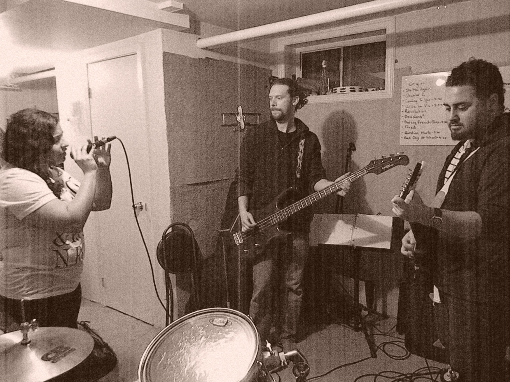

Article and Photography by Diana Whistance-Smith
Uploaded on February 9, 2014
What happens when a Janis Joplinesque voice joins forces with her older brother on guitar, a general contractor who doubles as a bassist, and a tool and dye-making drummer? Everything, really. From R&B and latin fusion, to classic rock and now indie, the musical stylings of Munster Avenue have dabbled into an array of sounds and experiences.
The ‘magical’ feel of the Indie genre has stuck with the band since they hit the Toronto music scene in 2011. Munster Avenue is headed by fourth-year arts and contemporary studies student Nevein Orellana, guitar gurus Nabil Orellana and Marian Uhrinek, and their drummer, Julian Craig, as the cherry on top.
Munster Avenue came together after their lead singer’s former band abandoned her before their first Nathan Phillips Square gig. The musicians accompanying her weren’t meshing well, and left Nevein as a one-woman act for the event. As a result, Nabil assumed the thoughtful-older-brother position, and decided to learn guitar to help his sister in future performances. He called some friends who played bass and drums. They got together, and decided on a name after a rehearsal at a studio on Munster Avenue in Toronto.
Looking for independence in their expression of music and Uhrinek’s love of rock and roll, the group settled on the Indie genre as their common ground.
“As individuals, we all come from different music backgrounds, in terms of our music genres and styles. We just sat down and decided what we each like,” says Nevein. Their musical inspirations range from Janis Joplin to Jimi Hendrix, but what really keeps them going is a shared love for expressing their passion for music with people who have the same desires.
“I just love to play. It was a great thing to play and keep musically fit,” Uhrinek says. “It brings us as friends together, we love to play together, and that there is my inspiration-- staying close with the people that are fun to be with.”
Nevein has been writing since her early teens and is the lyrical genius behind the band’s creations, including one of their favorites called “Coming to Ya”. Whether it’s figuring out the beat or fills with the guitar, each member has their own unique style to contribute to the composition.
“At the beginning, you’re amateurs, you’re doing this because it’s fun and interesting, and it gives you more experience. After the years have gone by, we’ve gotten more serious,” Nevein says. “We still enjoy it, we still keep the passion, that’s exactly why we do it in the first place, but I feel like we’re more into it now than ever before.”
Although the band is not shy about incorporating different languages into their music or exploring other genres, rock-soul will always be the ground zero of their songs. Asserting your individuality within your own music is also key, the group says.
And Munster Avenue has come a long way from hiding behind sunglasses and looking down at their guitars to avoid facing the crowd during their first performance at Stonegate Community Health Centre.
Today, they perform at venues likes the Mod Club and The Hard Rock. They particularly love playing at Annette Studios, which gives off an intimate, garage-band feel.
“I really appreciate crowd reaction, not only are they clapping because you just sang a song, it’s more that that was your song, you just poured out your heart and your soul,” Nevein says. “We always try to get the crowds involved. The reaction is really important...We’re going to experiment more because we have so much more room to grow and find out.”
Practice makes perfect, and having fun with the music are the key pieces of advice the band had to offer.
“Music’s not supposed to be perfect, if you play the wrong note, don’t stop, keep going” Nevein says.
“We care about our music and we care about the people who come to see us. We always make sure we give our best no matter what and we show our love.”
Spotlight Editor in Chief
Vjosa Isai
vjosa.isai@ryerson.ca
Want to get your time under the lights? Are you a writer looking to join the Artist Spotlight initiative? E-mail us at music@ryerson.ca to see how!